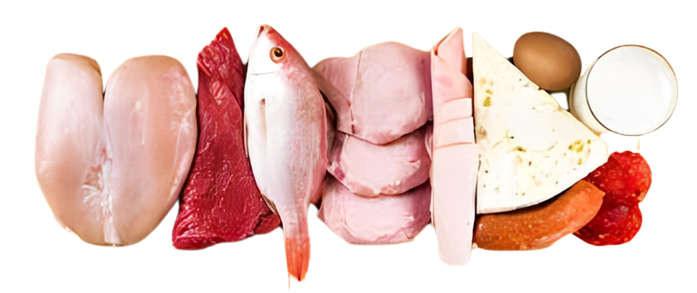

Prós e Contras da Dieta Atinks
Prós:
- Perde de Peso Rápida.
- Controle dos Níveis de Açúcar no Sangue.
- Maior Saciedade.
- Melhorias no Perfil Lipídico.
Contras:
- Restrição de Grãos e Frutas.
- Efeito Colateral Inicial
- Restrição Alimentar.
- Potencial Efeitos Colaterias(reanais ou hepáticos).
- Efeitos Desconhecidos a Longo Prazo.

Receitas Atinks
Escolha uma receita no menu abaixo: